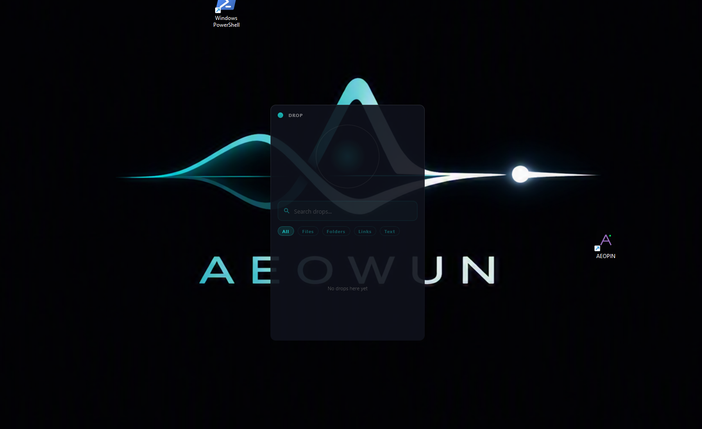
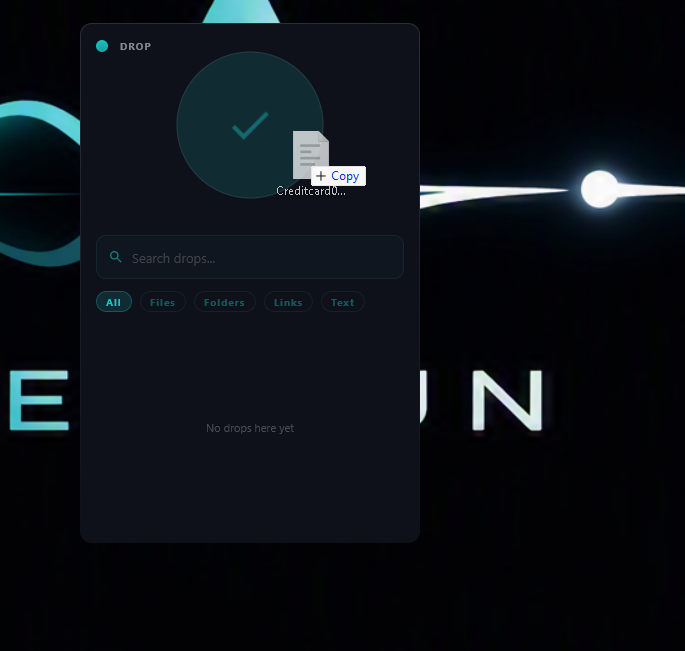
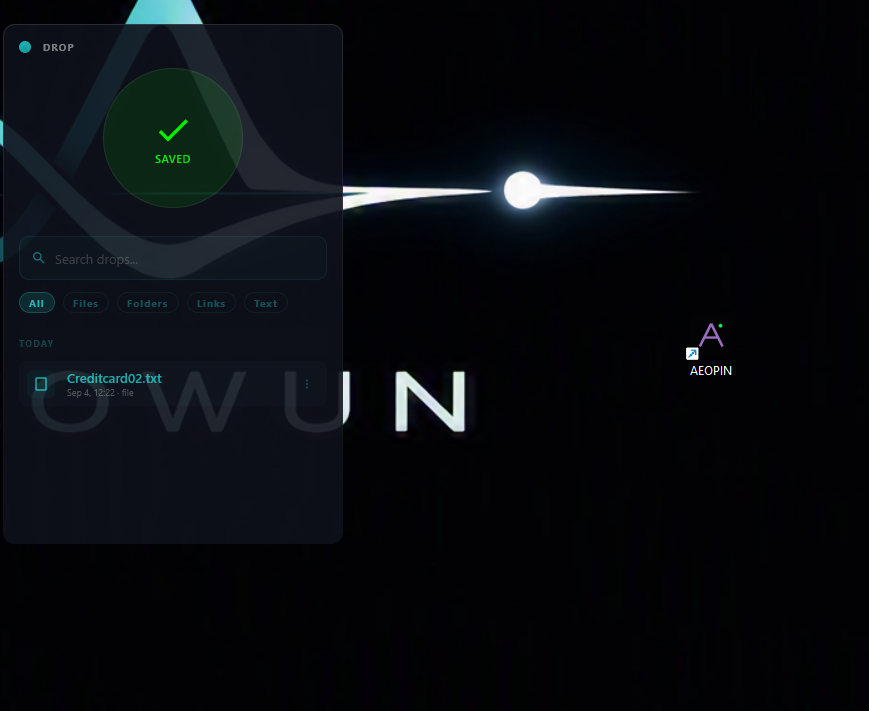

NO ACCOUNT REQUIRED
The core application works locally. Your files are not uploaded just to make capture useful.
Keep files, folders, links, and notes within reach. Capture now. Find later. Stay local.
The v1.2.3 Authority release verifies the matching portable payload, installs the managed application, and fails closed when integrity checks do not pass.
AEOPIN is designed as a local-first Windows tool. Your captured data is stored on your computer, without an account or cloud dependency for the core experience.
The current interface is built around a small desktop companion: drag something in, see it saved, and retrieve it through search when you need it.



The core application works locally. Your files are not uploaded just to make capture useful.
AEOPIN stays close to the desktop so capturing something does not require opening another workflow.
Future cloud services may add optional sync and backup without replacing local ownership.